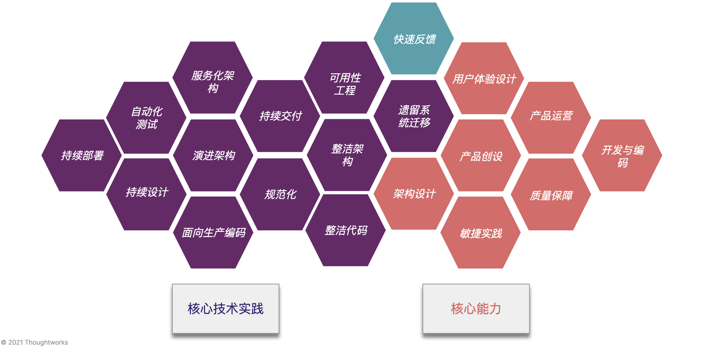
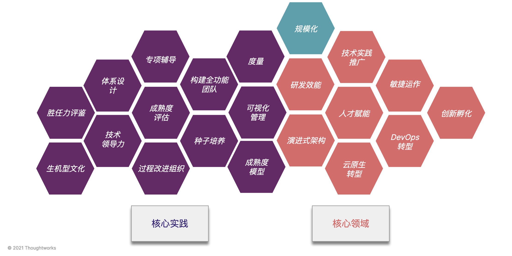
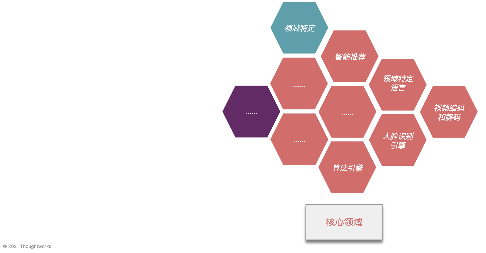
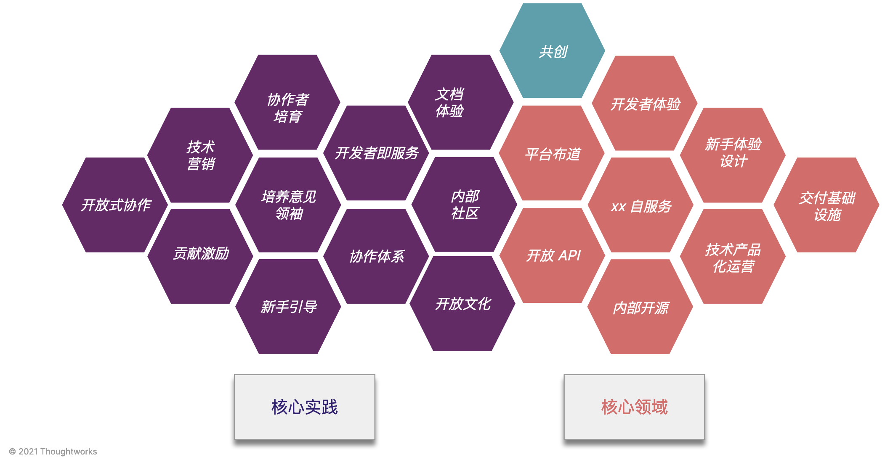
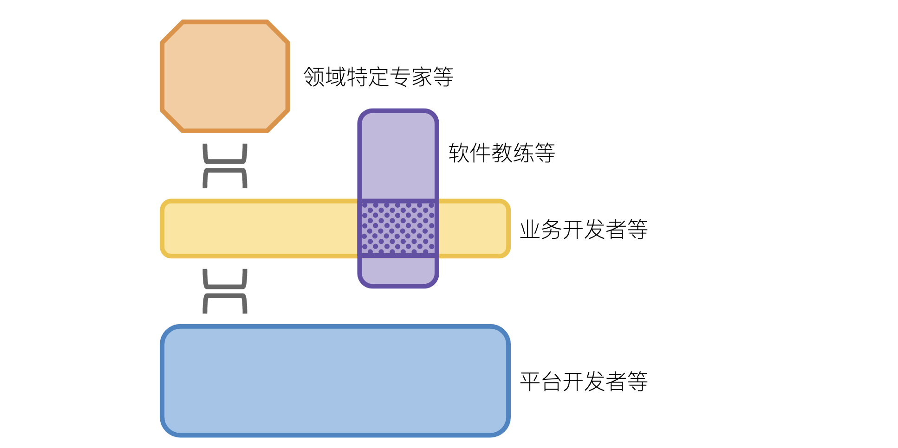
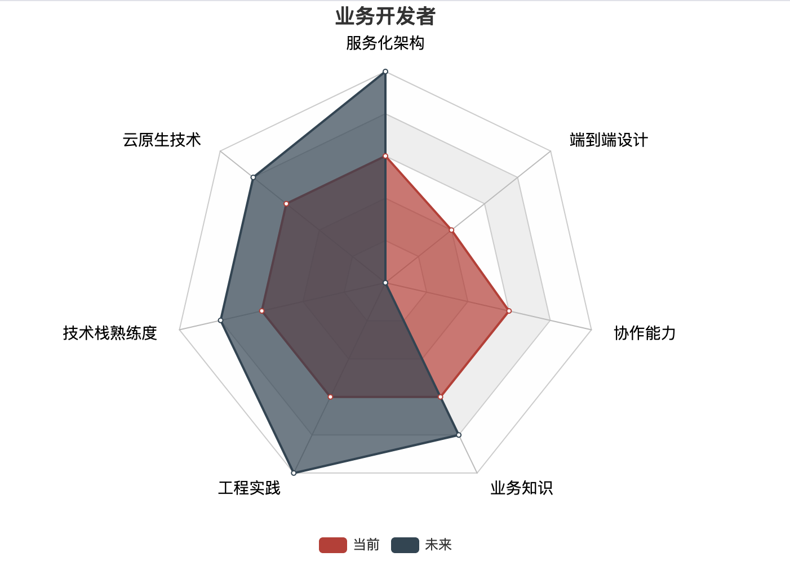
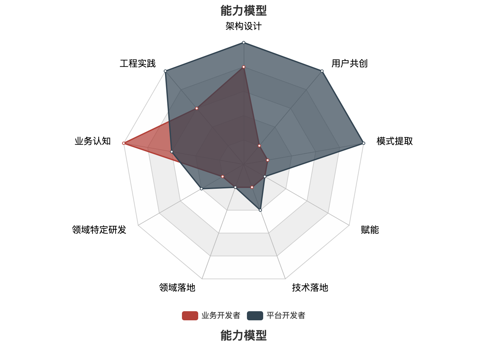

或是项目的原因，或是写作的原因，一直在思考『如何在云原生时代设计团队的协作？』以及『如何在云原生时代，重新定位开发人员的位置？』。起初，我只有一些细碎、不成体系的定义，直到这周公司大佬在内部分享了团队拓扑的理念之后。我终于找到一种合适的方式（基于这个体系），建立起有理论支撑的协作设计、体系化的开发者定位。
所以，在这篇文章里， 我们将：
- 介绍团队拓扑的基本概念
- 四个基本团队拓扑的能力模型
- 四种类型的开发者定位
- 四种类型的开发者的能力模型
从理念上看，本文可以帮助你寻找到自身的定位，并帮助团队更好演进。
团队拓扑
这个概念的来源是《高效能团队模式：支持软件快速交付的组织架构》，但是标题中没有体现核心『Team topologies』（团队拓扑），又是一个失败的标题。
直接进入正题，我们这里直接进入这本书的核心部分 —— 四类基本团队拓扑。如下图所示：

四种类型的团队，相互协作，共同来创造价值。概念定义如下（经过重新的定义）：
- PS：产品导向团队（Stream-aligned team），在书中译为流动式团队，一个容易产生歧义的翻译。我的同事建议翻译成价值流团队。在这里，我还是使用产品导向团队，方便于大家能快速理解 。
团队（Stream-aligned team），又可称为端到端的团队，它是指匹配业务领域或组织能力的持续流动的工作任务的团队。它对应于一个产品、一项服务、一组功能特性等。成熟 的产品导向团队，能端到端地完成交付用户价值，而无需将部分工作交由其它团队完成。 - 赋能团队（Enabling team），是由特定技术领域（如 DevOps、持续交付、自动化测试等）或者产品领域的专家组成，赋能给产品导向团队，提供工具、实践、框架、技术栈等方面的建议和支持。如『技术咨询团队』便是其中的一类，在国内有华为的软件教练，腾讯的敏捷教练等。
- 复杂子系统团队（Complicated-subsystem team），负责构建和维护系统中严重依赖专业领域知识的子系统。他们中大多数是相关领域的专家，其目标是降低各个产品导向团队的认知负荷，如人脸识别引擎、IDE 开发、领域特定语言开发等。
- 平台团队（Platform team），向产品导向团队交付能高度自治的工作模式。他们向开发团队提供自服务的 API、工具、知识、服务和支持，典型的是各类的基础设施平台，如基础设施代码化的云原生相关的技术平台。
PS：产品导向团队（Stream-aligned team），在书中译为流动式团队，一个容易产生歧义的翻译。我的同事建议翻译成价值流团队。在这里，我还是使用产品导向团队，方便于大家能快速理解 。
如果单纯从组织来看，平台、赋能、复杂子系统团队都是为产品导向团队服务的，即为业务价值服务。只是呢，随着各个公司对外提供技术能力，每个平台既可以为组织内部服务，还能在组织外产生价值。
团队拓扑能力模型
基于上述的定义方式，我尝试将我所了解的模式、实践与原则，融入到四种类型的不同团队中。构建了第一个简单版本的团队拓扑能力模型，以定位每个团队所做的内容。
产品导向团队 ：快速反馈
如下是产品导向团队（Stream-aligned team）的核心能力与相关的技术实践（第一版本，暂时比较粗糙）。

产品导向团队的关键是，实现快速反馈。从用户痛点出发，并能快速实现用户的价值。这就要求团队具体完整的端到端能力，采用诸如于看板等敏捷实践，良好的架构实践等。
所以，从核心能力来看，它应该包含产品运营、产品创设、用户体验设计、开发与编码、架构设计、质量保障、敏捷实践等能快速高用户价值的能力。
进而，对于技术人员来说，我们需要掌握：可用性工程、服务化架构、遗留系统迁移、自动化测试、持续交付、整洁架构、演进架构、持续部署、持续设计、规范化、整洁代码、面向生产编码等相关的技术实践。
赋能团队：规模化
如下是赋能团队（Enabling team）的核心能力与相关的技术实践（第一版本，暂时比较粗糙）。

赋能团队的关键是，实现规模化，即如何规模化的赋能给各个团队。从模式来看，他们需要为团队带来一些新的视角，帮助团队进行演进、转型等。
所以，从核心能力来看，它需要技术实践推广、敏捷运作、研发效能、人才赋能、创新孵化、演进式架构、DevOps 转型、云原生转型等能进行规模化的能力。
进而，对于技术人员和管理人员而言，我们需要掌握：专项辅导、体系设计、构建全功能团队、可视化管理、成熟度评估、胜任力评鉴、技术领导力、种子培养、成熟度模型、过程改进组织、生机型文化、度量等相关的技术赋能和管理实践。
复杂子系统团队：领域特定
如下是复杂子系统团队（Complicated-subsystem team）的核心能力与相关的技术实践（第一版本，暂时比较粗糙）。

复杂子系统团队的模式是，领域特定。在这个特定领域的模式下，我们难以抽象出一个核心的能力模型。其实也是有的，只是都是研究相关的，只需要抽象出研究的模式，那么我们就能写出这个模型。
等下次，我有空看能不能补上。
平台团队：共创
如下是平台团队（Platform team）的核心能力与相关的技术实践（第一版本，暂时比较粗糙）。

平台团队的关键是，实现共创，即与其它团队一起产生价值。从模式来看，他们需要提供更好的服务，以改善开发者们的体验。
所以，从核心能力来看，它需要开发者体验、新手体验设计、平台布道、xx 自服务、交付基础设施、开放 API、技术产品化运营、内部开源、等能进行大量与开发者们进行协作设计的能力。
进而，对于团队和平台而言，我们需要掌握：文档体验、协作者培育、技术营销、开发者即服务、内部社区、培养意见领袖、开放式协作、贡献激励、协作体系、开放文化、新手引导等核心的实践。
团队拓扑的开发者类型
基于上述平台的核心能力与基础模型，我们可以再看看每个平台需要怎样的开发者：

对应不同的角色，再次的我们可以定义他们的主要的开发者角色：
- 产品导向开发者，面向业务产品的工程师，以解决实现的业务问题为主。需要有从需求到上线的端到端视角，也就是狭义意义上的『全栈』。在技术能力上，以工程实践 + 架构设计为主，还需要精通业务相关的知识。
- 领域特定专家，是指在特别领域技术专家或者领域业务专家，致力于某个特定领域的研究，如 AI。其工作性质偏向于研究，能力模型以特定领域为主，并配合业务或者技术上的实践。
- 技术/敏捷教练，为团队提供组织内的相关技术能力、业务能力支持。工作性质以迁引为主，在能力模型上以教辅 + 培训为主，配合对于相关领域有一定的掌握。
- 平台开发者，构建软件框架、平台、API 等面向开发者的服务。在能力模型以落地领域知识为主，能力模型以提供相关最佳实践为主，并将模式与原则融入到工具和平台中。
在有了对于这些角色的定义之后，我们可以简单地再定义每个角色的能力模型。
定义能力模型
PS：这部分的内容，只用于展示如何进行能力模型，未经过充分的证明与调研。
在我们定位了不同的角色之后，便可以：
- 头脑风暴一下，每个角色的具体职责
- 定义每个角色的核心能力
- 让开发者自评，并考虑未来的成长方向
下图是我们初步（拍脑袋定的，不准确）定义的业务开发者所需要的能力模型：

在这个粗糙的版本里，我定义了这九个维度：
- 云原生技术。掌握云原生时代架构的相关的技术能力。
- 服务化架构。具备微服务架构设计的能力，如 DDD 等。
- 技术栈熟练度。对于团队所所使用的技术栈的熟练程度。
- 工程实践。单元测试、分支管理、技术债管理等实践。
- 业务知识。对于业务知识的了解程度。
- 协作能力。与不同角色的协作流程设计。
- 端到端设计。对团队的开发流程的掌握程度。
同样的，对于其它角色来说，我们也可以定义一些相关的模型。由于篇幅所限，这里就不展开了。
（PS：其实是我懒得写，后续可以在：https://devops.phodal.com/maturity/team-topologies 上进行查看）。
开发者转型
PS：这部分的内容，只用于展示如何进行能力模型，未经过充分的证明与调研。
对于不同的开发者来说，在不同的时间点都会有不同的拆求。有的人做的是业务开发相关的工作，但是对于平台开发等比较有兴趣。因此，让我们基于上述的四种角色，简单的再抽象一下核心的能力：架构设计、工程实践、业务认知、领域特定研发、辅导落地、赋能、培训模式提取、用户共创。
然后，我们就定义于适用上述四种角色的能力模型，以便于开发者们可以根据自己的需求，查看自己与特定团队之间的差距。
如下图是一个业务开发者与平台开发者的能力模型示例：

从这个模型中，我们 就可以看到不同角色对于能力的要求是不同的。由于这是一个简化版本的模型，所以在能力体现上没有那么准确
小结
欢迎留言参与讨论与设计 。
本书的主要灵感来源于《高效能团队模式：支持软件快速交付的组织架构》。
PS: 让我再加几个字，以便于把字数凑合到 3000 个字。